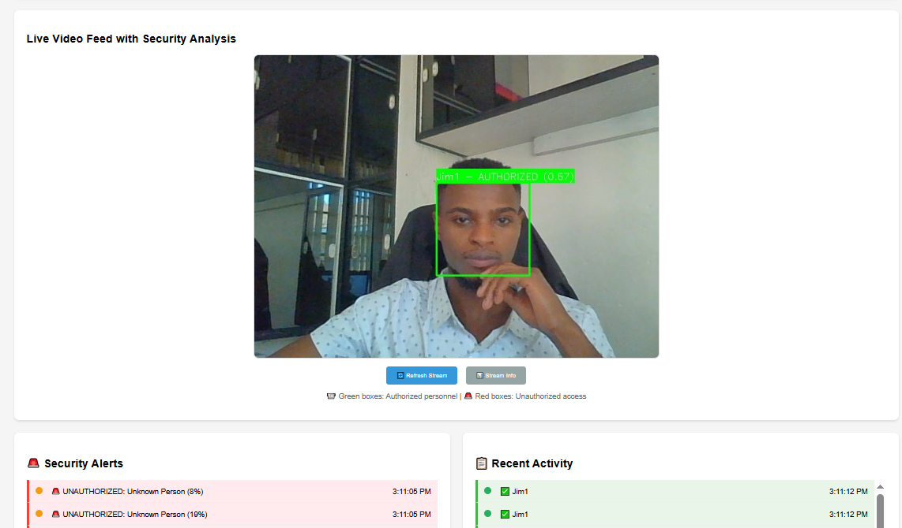
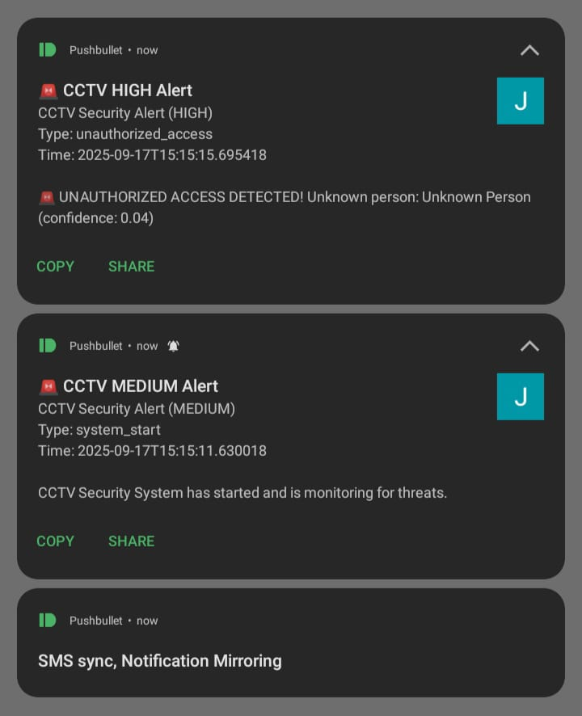

    <!-- Modal 4: CCTV AI System -->
    <div id="modal4" class="modal">
        <div class="modal-content">
            <span class="modal-close" onclick="closeModal('modal4')">&times;</span>
            <h2 class="modal-title">CCTV AI System</h2>
            <div class="modal-meta">2024 • Software Development • Python, Computer Vision, AI</div>
            
            <div class="modal-images">
                
                
                
                
                
            </div>
            
            <div class="modal-content-text">
                <h3>Project Overview</h3>
                <p>The CCTV AI System is a cutting-edge, AI-powered security monitoring solution that transforms traditional CCTV surveillance into an intelligent, automated security system. Built with Python and modern computer vision technologies, this system provides real-time face detection, personnel recognition, and instant mobile alerts for comprehensive security management.</p>
                
                <h3>Key Features</h3>
                <ul>
                    <li><strong>Real-time Face Detection:</strong> Advanced computer vision algorithms for accurate face recognition</li>
                    <li><strong>Personnel Recognition:</strong> Identify authorized and unauthorized personnel automatically</li>
                    <li><strong>Instant Mobile Alerts:</strong> Real-time notifications sent to security personnel</li>
                    <li><strong>Motion Detection:</strong> Intelligent motion sensing with false alarm reduction</li>
                    <li><strong>Multi-Camera Support:</strong> Monitor multiple camera feeds simultaneously</li>
                    <li><strong>Database Integration:</strong> Store and manage personnel records and security logs</li>
                </ul>
                
                <h3>Technology Stack</h3>
                <ul>
                    <li><strong>Python:</strong> Core programming language for system development</li>
                    <li><strong>OpenCV:</strong> Computer vision library for image processing and face detection</li>
                    <li><strong>TensorFlow/PyTorch:</strong> Machine learning frameworks for AI model training</li>
                    <li><strong>Flask/Django:</strong> Web framework for system interface and API</li>
                    <li><strong>SQLite/PostgreSQL:</strong> Database for storing personnel and security data</li>
                    <li><strong>SMS/Email APIs:</strong> Integration for instant alert notifications</li>
                </ul>
                
                <h3>Security Applications</h3>
                <ul>
                    <li>Corporate office building security monitoring</li>
                    <li>Residential compound access control</li>
                    <li>Retail store theft prevention and monitoring</li>
                    <li>Industrial facility perimeter security</li>
                    <li>Educational institution safety management</li>
                </ul>
                
                <h3>System Capabilities</h3>
                <ul>
                    <li>24/7 automated surveillance with minimal human intervention</li>
                    <li>High accuracy face recognition with low false positive rates</li>
                    <li>Scalable architecture supporting multiple locations</li>
                    <li>User-friendly web interface for security management</li>
                    <li>Comprehensive logging and reporting features</li>
                </ul>
            </div>
        </div>
    </div>
